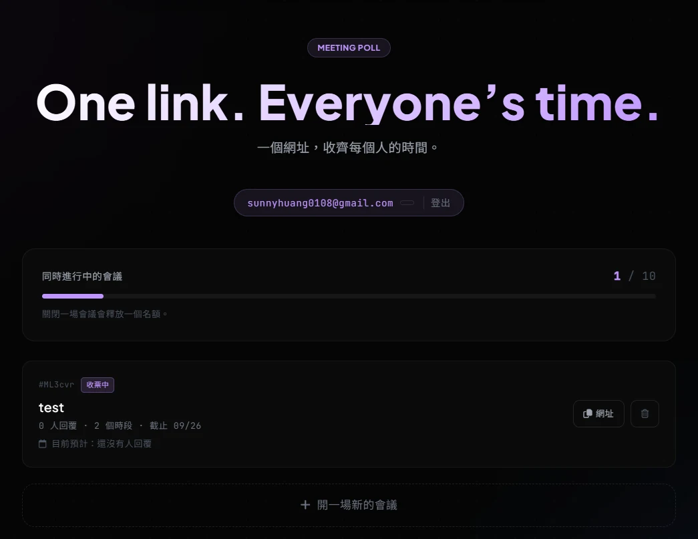
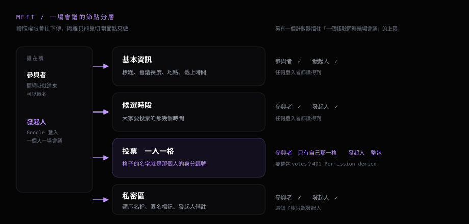

Meet 是一個約會議時間的小工具：發起人填一張表單拿到網址，收到的人點進去勾時段，發起人回來看結果。整套跑在 GitHub Pages 上，沒有後端。這篇寫它怎麼做出來，重點放在權限——瀏覽器直接對資料庫讀寫的站，要讓參與者看不到別人的答案，只能從資料結構下手。
工作上偶爾要約會議，在群組裡來回問「你哪天可以」會消耗每個人的 effort。市面上的服務我用過幾套，都沒留下來。我需要的動作只有三個：開一場、投一次、看結果。所以我自己做了 Meet，掛在自己的網域上，資料進自己的資料庫。這篇寫的是 2026-09-24 定稿的那一版。
# 設計目標與三個限制
目標很單純：發起人把網址貼進群組，收到的人點開勾選時段，發起人回來就能看到結果。實作上有三個限制要先處理。
第一個是帳號。現成的服務要參與者先註冊，才投得了一次時間。註冊這一關我直接移除：參與者點開網址，Firebase 匿名驗證發一個身分給他，身分存在他自己的瀏覽器裡，同一台裝置回來還是同一個人。
第二個是配額。現成服務的免費方案對同時進行的問卷數限制得很緊，超過就要付月費；自己做的話，瓶頸換成 Firebase 的免費額度。我的做法是在應用層先設一個同時進行的會議上限，發起人結束一場，名額就釋放一個。整套因此維持在免費額度內，開完的會議也必須收掉，首頁那條進度條顯示的就是剩餘名額。
第三個是操作成本。建立表單上除了會議主題與候選時段，截止時間與備註都標成選填，地點留空時預設帶 Microsoft Teams，發起人真正要停下來決定的只有時段。整體操作收斂成三個動作：開一場、投一次、看結果。
另外還有一條是我自己加的：參與者只看得到自己那一格，發起人看得到全部。投票只要能互相查看就會互相影響，所以這一條從一開始就列為硬性需求。

# 架構：權限從資料結構開始設計
權限這塊花掉我最多時間。有後端的站，「誰能看到什麼」寫在 API 裡：請求進來，伺服器先確認送請求的人是誰，再決定回哪些欄位給他。Meet 的前端是 GitHub Pages 上的靜態檔案，瀏覽器直接對 Firebase 讀寫，中間沒有一層可以放判斷。
資料放在 Firebase Realtime Database，它自己帶一份權限檔叫 Security Rules，逐個節點宣告誰能讀、誰能寫。第一版我把一場會議的全部資料塞在同一個子樹底下，想靠規則擋掉其中幾個欄位。這條路走不通：讀取權限會往下傳，父節點一開放，底下的子節點全部跟著開放。
所以我改的是資料結構，把一場會議切成四塊。把用途與讀取對象不同的資料分開存放，資料庫才有辦法對每一塊各自宣告誰能讀、誰能寫，權限因此由資料庫執行，跟介面顯示什麼無關。

第三塊是投票。Meet 以「每個人一格」的方式存，格子的名字就是那個人的身分編號，所以參與者讀得到自己那一格，發起人讀得到整包。顯示名稱、匿名標記、發起人的私人備註我收進第四塊私密區，那個子樹只認發起人。
權限在資料結構這一層就決定完了，比任何事後補上的檢查都早一步。
# 使用流程與跨系統匯入
發起人填表單拿到網址，收到網址的人對每個時段三選一，發起人回到同一頁看四色比例條，挑一格定案。每個欄位與按鈕的作用我另外寫成一篇使用說明。
我還接了一條路進來。公司電腦上有一支我自己寫的小工具，它讀行事曆、算出大家的共同空檔；我讓那支工具把算好的時段編成一串可貼的文字，貼進建立表單的匯入欄位就展開成候選時段，省掉我手動輸入。兩套系統完全不連線，中間只有剪貼簿。
# 問題一：規則掛錯一層，整條被跳過
我原本以為，建立會議的時候資料庫會先檢查目前開著幾場、有沒有超過上限。實際去撞上限才發現，那條檢查從頭到尾沒有被執行過。第一版我把它掛在「一場會議」那一層的驗證規則上，語法合法，Console 沒有警告，正常測試也看不出異常。
驗證規則只在實際被寫入的那個節點與它的子節點上評估。建立一場會議的時候，寫入真正落在下面一層：
一場會議/基本資訊 ← 寫入實際落在這一層
一場會議/ ← 規則掛在這一層，整條跳過我把計數檢查往下搬一層，讓規則跟寫入路徑對齊，上限才開始生效。規則掛的位置跟寫入路徑對不上的時候，Firebase 不會報錯，它只是不評估那條規則，語法檢查也看不出來。
# 問題二：繞過前端，直接拿憑證打資料庫
我一開始用「畫面上沒顯示」來判斷權限有沒有生效，後來發現這樣不算測：前端只是沒把資料畫出來，資料庫給不給是另一回事。所以我另外建立一個參與者身分，繞過網頁介面，用 Firebase 的 REST 介面（直接以 HTTP 請求存取資料庫的那條路）對資料庫發出讀寫請求，看它實際允許哪些操作。
用參與者憑證要「發起人的私人備註」 → 401 Permission denied
用同一個憑證要「全部人的投票」 → 401 Permission denied
用同一個憑證寫「自己那一格」 → 成功這組測試的結論跟前端畫面無關，所以它才有效。有人自己寫一支 client 去打同一個 API，資料庫回給那支 client 的答案，跟回給瀏覽器的答案是同一個。
# 問題三：公司那條線要接到哪裡為止
最直覺的做法是讓公司那支工具直接把時段寫進 Meet 的資料庫，代價是公司機器上得長期保管一份能通過 Security Rules 的憑證。為了一個個人工具，這個代價高於它換來的便利，所以整合停在資料交換這一層：兩邊只傳一串簽章過的文字，格式大致是這樣（示意）：
<版本前綴>.<內容>.<簽章>
內容 = 時段清單編成一串可貼的文字
簽章 = 用共用金鑰對「內容」算 HMAC-SHA256，取前面幾個 byte這串文字的用途是讓 Meet 確認內容在傳遞過程中保持原樣。做法是 HMAC：用一把共用金鑰對一段資料算出驗證指紋，Meet 在瀏覽器裡把收到的文字重算一次指紋，算出來的值跟附在後面的簽章對得起來就通過。字串裡面只有時段本身，與會者、主旨、忙閒明細留在公司電腦上。
這個設計有一個已知且刻意保留的限制：金鑰放在瀏覽器裡，任何人打開開發者工具都找得到，所以知道金鑰的人仍然偽造得出一組通得過的簽章。這道簽章的作用範圍是偵測意外的改動——複製時少了一段、貼到錯的欄位、手動改掉幾個字元、格式在傳遞中壞掉。要讓參與者拿不到金鑰，我得把驗證搬到伺服器上，那個版本會失去 Meet 現在零後端、零成本、純靜態的形狀。
# 上線之後
從使用的人那一側看，整件事剩三步：開一場、勾時段、回來看結果。這個設計想省掉的是群組裡那一輪「你週三可以嗎」，以及為了回一次時間去加入另一個平台。我自己每次要約會議都還在用它，後續想到的功能會繼續補。
這套做法跟 Whiteboard 是同一條：純靜態站做得到權限控管，前提是權限從資料結構開始設計。參與者看不到別人的答案，靠的是每個人一格這個結構，它在資料庫那一層就成立，跟介面畫了什麼無關。
有想到更好的做法、或覺得哪裡有漏洞，都歡迎跟我說。程式碼公開在 GitHub，開 issue、丟 PR 或給一顆 star 我都收得到。想直接許願也可以去 許願板 貼一則。
# 技術棧
- 前端：原生 JavaScript ＋ Tailwind，無框架無打包工具
- 部署：GitHub Pages
- 資料庫與權限：Firebase Realtime Database ＋ Security Rules
- 登入：Google Identity Services，頁內登入不開彈窗
- 匿名投票：Firebase 匿名驗證，身分存在瀏覽器本機，同一台裝置回來還是同一個人
- 跨系統傳遞：base64url ＋ HMAC-SHA256，瀏覽器端用 Web Crypto API 驗章
- 共用：跟 Whiteboard 共用同一個 Firebase 專案與同一份權限檔，兩個工具各佔一個頂層節點
GitHub Pages 的 COOP 標頭會干擾 Google 的彈窗登入流程，所以這裡走頁內登入，拿到憑證後在同一頁換成資料庫認得的身分。整套跑在 Firebase 的免費方案上，官方定價頁（2026-09-25 查證）列出的免費額度對這個用量還有很大空間。